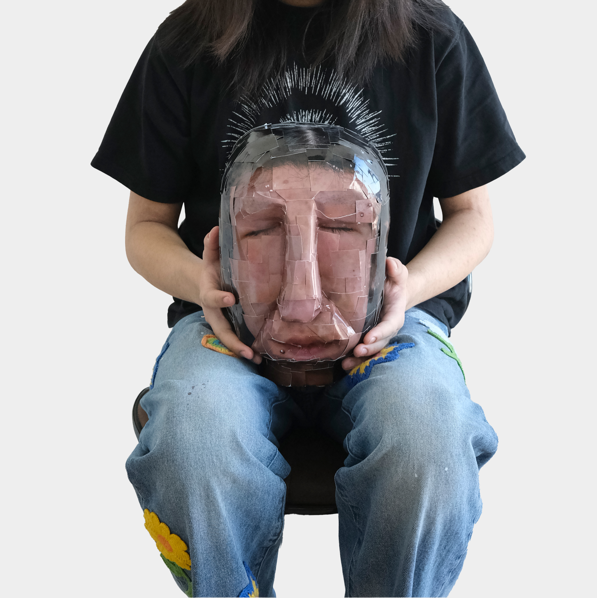

Jiazhen Luo

@24fall
PUDT 3101 Core Lab Systems
2.1 Exercise_DOM
2.2 Website: Static Website
4.1 Exercise: Dynamic Web Page
4.2 Exercise: Interactive Website
5.1 Exercise: SVG Drawing
5.2 Website: data visualization
6.1 Website: React Website
7.2 Develop a Web Service
...
PUDT 3100 Core Studio Systems
^ Self As System
^ City As System
^ Emerging Futures